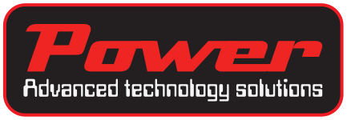

Power-Tools è il progetto di Power Advanced Technology Solutions dedicato all'acquisizione dati sul veicolo: un data logger per registrare le grandezze di bordo e un dash per visualizzarle in tempo reale.Power-Tools is the Power Advanced Technology Solutions project for in-vehicle data acquisition: a data logger that records on-board channels and a dash that shows them in real time.
Due strumenti che lavorano insieme: uno registra, l'altro mostra. Entrambi si configurano e si aggiornano con il software Power-Tools per PC.Two devices that work together: one records, the other displays. Both are configured and updated with the Power-Tools PC software.
Registra le grandezze del veicolo durante l'uso, per analizzarle poi al computer.Records vehicle data while you drive, for analysis on your computer afterwards.
Display da cruscotto che mostra in tempo reale i valori più importanti.Dashboard display showing the key values in real time.
Da qui sarà possibile scaricare l'ultima versione del software, i firmware e le note di rilascio.This is where you will download the latest software, firmware and release notes.
Installer per Windows e note di rilascio di ogni versione.Windows installer and release notes for every version.
Aggiornamenti per Drago One e Dash, installabili dal software.Updates for Drago One and Dash, installed from the software.
Manuali di Drago One e Dash, guida al software e domande frequenti.Drago One and Dash manuals, software guide and FAQ.
Lo shop per l'acquisto di Drago One, Dash e accessori è in preparazione. Per informazioni o preordini scrivici.The shop for Drago One, Dash and accessories is being prepared. Write to us for information or pre-orders.
Il logger con software di analisi incluso.The logger, analysis software included.
Il display da cruscotto pronto da installare.The dashboard display, ready to install.
Drago One e Dash insieme, cablaggi e supporti.Drago One and Dash together, harnesses and mounts.
Per informazioni su Power-Tools, collaborazioni o richieste di sviluppo su misura, scrivici: rispondiamo entro un giorno lavorativo.For information on Power-Tools, partnerships or custom development, write to us: we reply within one working day.